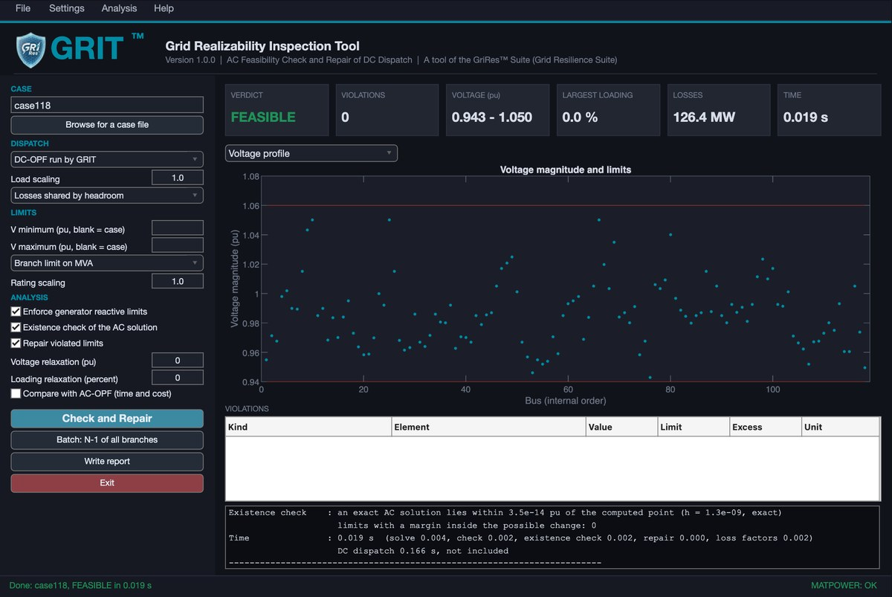

GRIT 1.0.0
Is your DC dispatch realizable in the AC grid? GRIT answers in under a second for a 10,000-bus system. Version 1.0.0 was released on November 15, 2026.

GRIT (Grid Realizability Inspection Tool) is a tool of the GriRes Suite. It reports whether the AC grid can carry a DC dispatch, where it fails, and which nearby dispatch works. It is free and open source under GPL-3.0.
- Source code on GitHub
- Release 1.0.0, with the 45-page manual